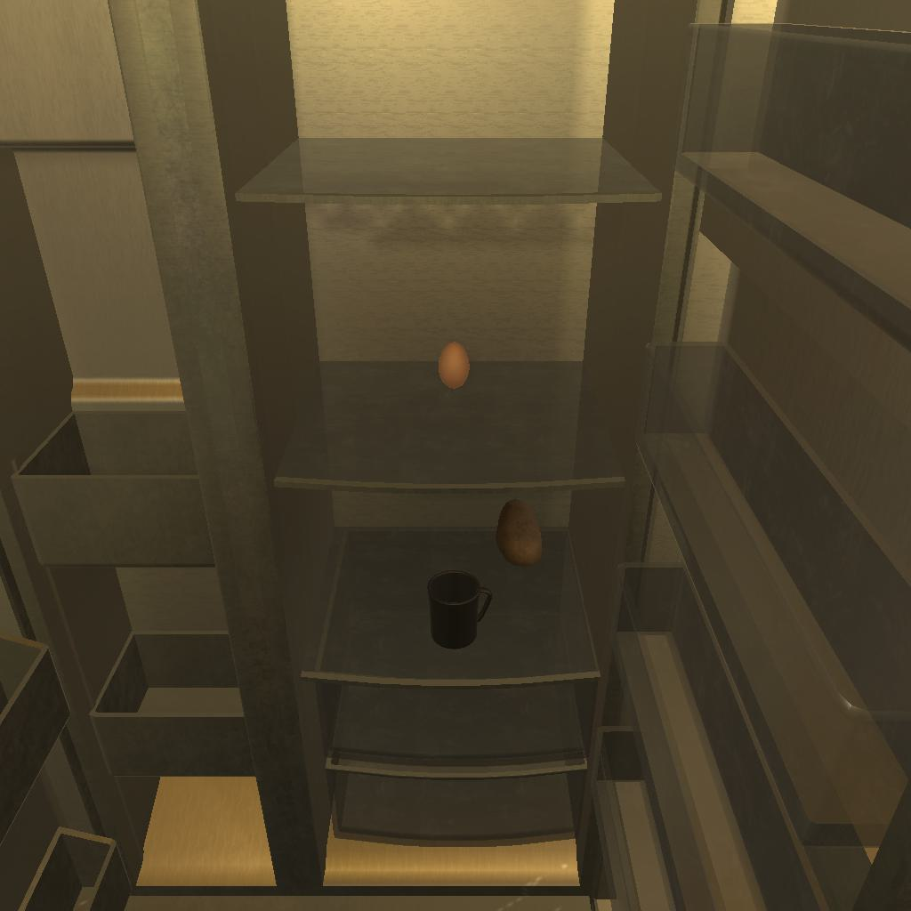

---------------------------------------------------------task: 29---------------------------------------------------------
--------------------------------------------------------------------------------------------------------------------------------------------------------------------
--------------------------------------------------------------------------------------------------------------------------------------------------------------------
Step:--------------------------------------------------------------------------19-------------------------------------------------------------------------------
----------------------------------------
VLM Prompt:
Image1:
**Instruction**
1. Analyze the provided image to identify all visible household objects, focusing on those relevant to the task description "put two tomato in countertop."
2. Use the analysis of the image and the task hint "The agent must find an object of the desired type, pick it up, find the correct location to place it, put it down there, then look for another object of the desired type, pick it up, return to previous location, and put it down there with the other object." to answer the question: what is the most reasonable action in the choices for the task description "put two tomato in countertop"?
4. Decide and write the answer using the template: The answer is: (i): , where i is the real number. If there is no desired object in the image, search every place based on **Initial Observation** to find the object. And if no one is exactly correct, choose a similar answer.
**Initial Observation**
You are in the middle of a room. Looking quickly around you, you can see cabinet (1-20), toaster (1), microwave (1), garbagecan (1), countertop (1-2), drawer (1-4), stoveburner (1-4), sinkbasin (1), sink (1), fridge (1), diningtable (1), coffeemachine (1)
**Answer Choices**
(1): go to cabinet 1
(2): go to cabinet 2
(3): go to cabinet 3
(4): go to toaster 1
(5): go to cabinet 4
(6): go to cabinet 5
(7): go to microwave 1
(8): go to garbagecan 1
(9): go to countertop 1
(10): go to drawer 1
(11): go to cabinet 6
(12): go to cabinet 7
(13): go to drawer 2
(14): go to stoveburner 1
(15): go to stoveburner 2
(16): go to countertop 2
(17): go to cabinet 8
(18): go to cabinet 9
(19): go to cabinet 10
(20): go to drawer 3
(21): go to drawer 4
(22): go to stoveburner 3
(23): go to stoveburner 4
(24): go to cabinet 11
(25): go to cabinet 12
(26): go to cabinet 13
(27): go to cabinet 14
(28): go to sinkbasin 1
(29): go to sink 1
(30): go to cabinet 15
(31): go to cabinet 16
(32): go to cabinet 17
(33): go to cabinet 18
(34): go to cabinet 19
(35): go to diningtable 1
(36): go to coffeemachine 1
(37): go to cabinet 20
(38): close fridge 1
(39): take mug 1 from fridge 1
(40): take potato 1 from fridge 1
(41): take egg 1 from fridge 1
**Answer**
Let's think step by step by following the instructions.
----------------------------------------
----------------------------------------
Original Response:
Firstly, we need to identify the household objects in the provided image. The image shows a shelf with various objects, including an egg and a potato. However, there are no tomatoes visible in the image.
Given the task description "put two tomato in countertop" and the initial observation that mentions the presence of a fridge, the most reasonable action would be to search for tomatoes inside the fridge, as they are a perishable item commonly stored in a fridge.
None of the answer choices directly mention checking the fridge for tomatoes, but we can infer that the agent may need to open the fridge to search for the tomatoes. As such, the closest action that could lead to finding the tomatoes would be to go to the fridge, which is not listed as a direct choice.
Since the answer choices do not provide an option to directly "go to fridge 1," we must choose the closest action that could potentially lead to finding tomatoes. The most reasonable action would be to open the fridge, as the tomatoes are likely stored there. However, there is no choice stating "open fridge 1," but there is a choice to "close fridge 1" (38), which implies that the fridge is currently open.
The answer is: (38): close fridge 1. This action suggests that the agent is already at the fridge and would need to close it after retrieving the tomatoes, even though the action of taking the tomatoes from the fridge is not explicitly listed.
----------------------------------------
----------------------------------------
>>> Refine Original VLM Response and Get Pure Action: close fridge 1
----------------------------------------
-----------------------------------------------------------------
Running time: 25.00441002845764 seconds
Total Money: 10.62102
-----------------------------------------------------------------
-----------------------------------------------------------------
Text Observation:You close the fridge 1.
-----------------------------------------------------------------
UNSUCCEED